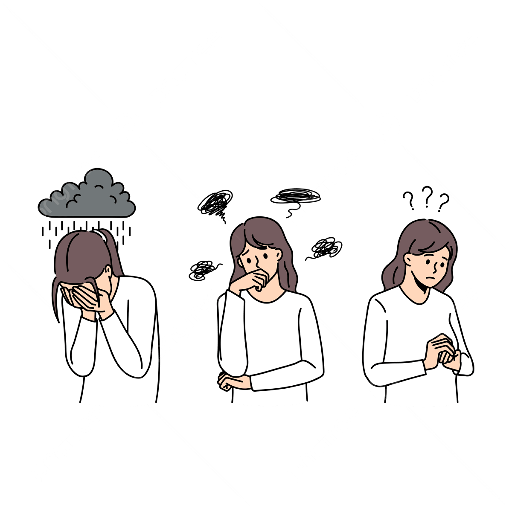

Heb je altijd al eens willen schrijven? Misschien heb je een heel universum in je hoofd. Het kan ook zijn dat je een liefdesverhaal wil vertolken. Hieraan beginnen kan lastig zijn en doorzetten komt vaak ook niet vanzelf.

Deze website staat vol met tips en tricks om hoe je zelf kan beginnen met een fictieverhaal te schrijven. Hoe je de juiste schrijfgewoonte creëert en gaat van een warrige eerste draft naar een manuscript dat je kan opsturen naar een uitgeverij.
Ook als je nog niet zeker bent waar je naartoe gaat kan je hier inspiratie vinden.
Met exclusieve berichten van auteurs over heel het land en dé hub om te weten te komen waar je moet zijn om jouw netwerk te bouwen. De schrijfwereld is nog nooit zo duidelijk en toegankelijk geweest.